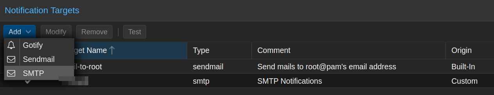
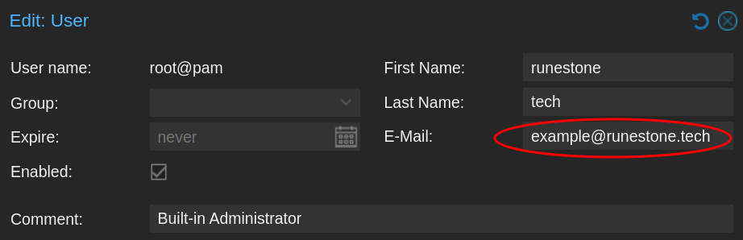
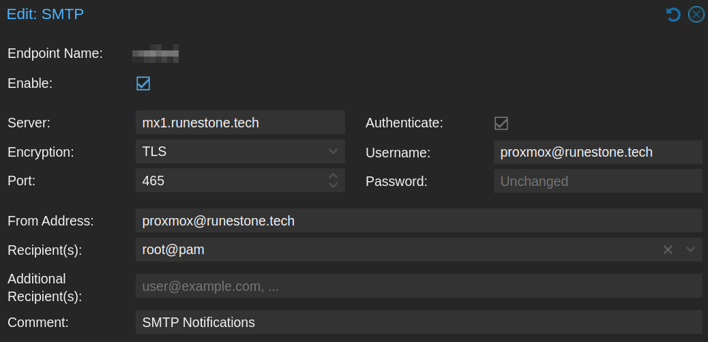
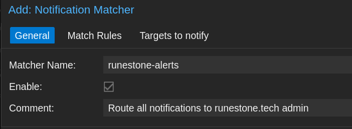
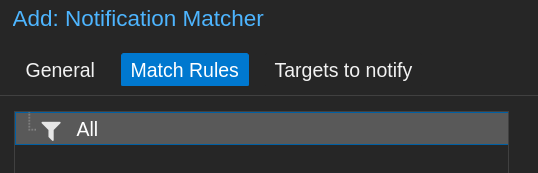
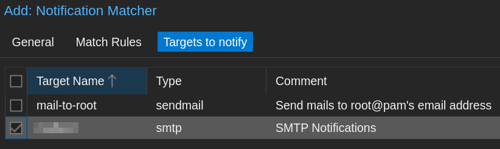

Introduction:
I’ve been running Proxmox Virtual Environment in some incarnation or another for 6+ years now. My current cluster runs DNS and other critical functions.
As I rely on Proxmox more and more, I realize I need better monitoring. My goal is to be alerted as soon as something goes wrong, as well as receive notifications when important tasks are successful.
I had a few pitfalls when configuring this, so I’ve outlined the process below.
Overview:
By default, Proxmox has three built-in notification types: Gotify, Sendmail, and SMTP. You can access this menu by going into the Datacenter > Notifications view on your host:

Proxmox includes postfix installed as part of the OS. It does have the ability to act as an outbound email server directly. However, ISPs may block outbound on residential IPs, and many providers will send this kind of mail to spam.
To get around this, let’s configure SMTP to relay through my external email server.
Configuration Steps
📝 Note: This process is almost identical for Proxmox Backup Server (PBS). Users are instead configured in
Configuration > Access Control
Email Setup
First, let’s configure the admin’s email address. This email will receive all of our alerts. This will be our notification inbox. You may have done this during installation.
- Go to
Datacenter > Permissions > Users - Edit the account and fill out the details as desired. Make sure the email exists or is an alias at your provider.
📝 Note: We are using the built-in admin account for this example. If you have an identity setup with Keycloak or other authentication service, changing your email here may impact authentication!

- In
Datacenter > Notifications, click onAdd > SMTP. - Fill out the details, using the desired account information:
📝 Note: Username/From Address is your sending account. This should be a dedicated service account for Proxmox. Don’t reuse credentials or put in your personal e-mail here!
 Explanation:
- The “server” field is your sending server. In this case, the VPS hosting my email. You could potentially use Google, Microsoft 365 or another hosted service here. Change ports as needed, though I strongly recommend using TLS.
- You must use Authentication, otherwise you have an open relay. Enter the SMTP credentials you setup.
- Recipient is root@pam or the account from step 2. Proxmox will send to the email address in this user’s profile.
- Disable the original
mail-to-rootnotification target when you have created your new SMTP target. - Click the
Testbutton and confirm you receive the email at your configured address.
Update Datacenter Address:
Now that the SMTP profile is configured, we need to update the Datacenter from address. If you don’t do this, it can result in your email being rejected, since it will send as root@$hostname
- Go to
Datacenter > Options. Find the “Email From Address” field and edit it. - Use the same From Address that you configured in the SMTP profile.
Update Notification Matchers:
Now that the email is configured, we must change the notification settings to use our new profile.
- In
Datacenter > Notifications, go toNotification Matchersand clickAdd. - General: Create a matcher name and comment. You can’t use periods in the matcher name. 
- Match Rules: Select the default All for now. This is very customizable if you want certain alert types to go to specific users. (Learn More) 
- Targets to notify: Select the new SMTP option you configured. Uncheck mail-to-root, since it’s using sendmail. 
- Save your settings. Then open the initial default-matcher and disable it.
Update Notification Profiles + Testing:
A straightforward way to test is to run a backup job and verify it sends out a backup status email.
- Go to
Datacenter > Backupand select an existing backup job. If there aren’t any, create one. - Under the General tab, change the
Notification Mode:drop-down to Notification System. This will set it to use the SMTP profile + Notification Matcher we just configured.
📝 Note: By default, backup jobs are set to the Default (Auto) method. This does not utilize the SMTP profile you configured, and may result in frustrating e-mail rejection. If you want SMTP notifications to work, you must select
Notification System
- Save your settings and click
Run Nowand wait for the backup to complete. I like testing this with a small LXC container because I can quickly re-run it. Verify you receive a backup summary email.
Troubleshooting:
Mail Not Being Sent
Watch your system logs, either through the GUI at $hostname > System > System Log , or follow the mail logs at /var/log/mail.log on your Proxmox system. This will show the details of each SMTP transaction.
When I followed the steps above, I was successfully getting my backup alerts from the configured email address. Yet when I looked at the Proxmox system logs, something weird was happening:
proxmox postfix/smtp[1966508]: 37291456EC: to=<example@runestone.tech>, relay=mx1.runestone.tech[xx.xx.xx.xx]:25, delay=370199, delays=370198/0.01/0.44/0.15, dsn=4.1.8, status=deferred (host mx1.runestone.tech[xx.xx.xx.xx] said: 450 4.1.8 <root@proxmox.homelab.runestone.tech>: Sender address rejected: Domain not found (in reply to RCPT TO command))
Proxmox was still trying to send some mail as the root/local user, ignoring the SMTP profile I just configured.
The issue was that my postfix queue had dozens of failed alerts from the previous configuration. It was continuously attempting redelivery, with greater and greater delays, per the email standards.
- Open a terminal on your Proxmox host and view a json list of all deferred email:
root@proxmox:/etc/postfix# postqueue -j
{"queue_name": "deferred", "queue_id": "67AAF408DC", "arrival_time": 1723133392, "message_size": 24590, "forced_expire": false, "sender": "root@proxmox.homelab.runestone.tech", "recipients": [{"address": "example@runestone.tech", "delay_reason": "host mx1.runestone.tech[xx.xx.xx.xx] said: 450 4.1.8 <root@proxmox.homelab.runestone.tech>: Sender address rejected: Domain not found (in reply to RCPT TO command)"}]}
This email may be stalled in /var/spool/postfix/deferred or similar.
- If your deferred email was due to a network issue and not an authentication problem (such as domain not found), flush and attempt redelivery on all mail:
postqueue -f - If your deferred email was due to a bad previous configuration like mine, and these alerts are all stale, delete all deferred mail to clear the queue:
root@proxmox:/var/spool/postfix# postsuper -d ALL deferred
postsuper: Deleted: 28 messages
📝 Note: If you are running a cluster, you will need to run these commands on each host.
Closing Thoughts:
At this point, you should have fully functional notifications for backup jobs, cron jobs and more relaying through your SMTP server. This is a simplified version of the setup. Check out the resources below to learn more.
References & Resources:
- https://pve.proxmox.com/wiki/Notifications
- https://forum.proxmox.com/threads/email-alerts-do-not-work.106027/
- https://forum.proxmox.com/threads/get-postfix-to-send-notifications-email-externally.59940/
- https://blog.rymcg.tech/blog/proxmox/03-notifications/
- https://www.postfix.org/postqueue.1.html
- https://www.postfix.org/postsuper.1.html
Version History:
Author: blackfeather@runestone.tech Version: 1.00 Last Updated: 2024-08-09